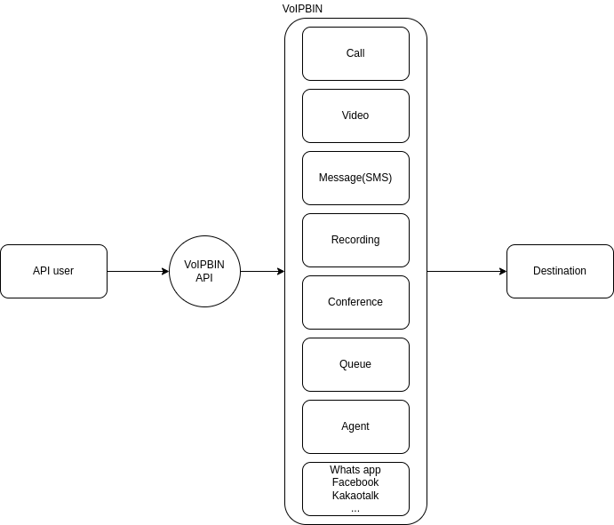

Introduction
VoIPBIN offers a comprehensive suite of powerful and versatile applications designed to enhance communication and engagement experiences. Whether it’s handling inbound calls, conducting outbound campaigns, enabling cross-channel messaging, or facilitating real-time collaboration, VoIPBIN’s applications are designed to meet diverse communication needs.
VoIPBIN’s diverse applications offer powerful features and APIs that can be tailored to meet the unique needs of various businesses and communication scenarios. With these applications at your disposal, you can deliver exceptional communication experiences to your customers and optimize your communication strategies for success.
Channels
VoIPBin offers a comprehensive range of channels to cater to various communication needs, empowering users to build robust and scalable communication applications.
Programmable voice
Programmable Voice allows developers to build engaging voice experiences that can be quickly scaled and modified with a wide array of customization options and resources, such as Voice actions. Users can enhance their voice applications by incorporating features like Interactive Voice Response (IVR), call recording transcriptions, and speech recognition. This enables the creation of voice experiences that both businesses and customers will appreciate.
See detail at here.
Account Notifications
VoIPBin provides Messaging and Voice APIs that allow businesses to keep their customers informed about every change to their accounts. This enables proactive and personalized communication, enhancing the overall customer experience.
Call Tracking
With Call Tracking, businesses can accurately attribute calls, measure the effectiveness of marketing campaigns, and optimize customer experiences in their software. This feature provides valuable insights into call performance, enabling businesses to make data-driven decisions.
Programmable calling
Using VoIPBin’s action flow, developers can rapidly build scalable WebRTC/PSTN/VoIP voice applications with uniform performance across all protocols and devices. This flexibility ensures a seamless and consistent communication experience for users.
Global conferencing
VoIPBin facilitates multi-party calling experiences with global dial-in/out support. The Global Conferencing feature enables businesses to connect participants from different geographical locations, fostering collaboration and communication across borders.
Interactive voice response(IVR)
The IVR system offered by VoIPBin enables businesses to increase customer engagement and reduce operational costs. With the ability to respond to commands and build text-to-speech experiences in hundreds of languages, businesses can deliver personalized and efficient customer service.
Messaging
Messaging on the VoIPBin platform provides a centralized and scalable solution to engage customers across their preferred channels. VoIPBin’s enterprise-ready APIs and intelligent network ensure unrivaled reliability at any scale.
Programmable Messaging API
The Programmable Messaging API allows businesses to deliver messages to customers across preferred channels with a one-way, transactional messaging approach. This API supports SMS, MMS, and Line messaging, enabling businesses to build messaging solutions for alerts, notifications, promotions, marketing messages, and more.
See detail at here.
Conversations API
The Conversations API enables businesses to support customers at critical moments on the channels they prefer, facilitating scalable and multiparty conversations. With support for in-app SMS, MMS, and Line messaging, businesses can build conversational messaging solutions for customer care, conversational commerce, and other use cases.
See detail at here.
Video
VoIPBin Video allows developers to build memorable and customized video experiences. With this feature, businesses can embed video experiences into their applications at scale, enhancing engagement and communication with users.
Applications
Flow
The Flow feature in VoIPBIN allows users to define a set of instructions that guide the system on how to handle incoming calls. With Flow, users can customize call handling, creating personalized and efficient call experiences for their customers.
See detail at here.
Agent
The Agent, also known as a call center agent or phone agent, plays a vital role in a company’s communication with its customers. Working on behalf of the company, the agent handles calls from private or business customers, providing support, assistance, or relevant information as needed.
See detail at here.
Campaign
The Campaign API in VoIPBIN provides services for massive outbound calling and messaging. With Campaigns, businesses can efficiently reach out to their target audience, delivering messages, announcements, or promotional content at scale.
See detail at here.
Conference
The Conference API is a versatile low-level API that enables users to create conference rooms for various communication objects, including voice, video, and chat. This feature fosters collaboration and communication among multiple participants in real-time.
See detail at here.
Conversation
VoIPBIN Conversations allow developers to build conversational and cross-channel messaging solutions with just a few API calls. This feature empowers businesses to engage with their customers through seamless and interactive conversations.
See detail at here.
Trunk
A SIP Trunk resource in VoIPBIN describes a custom DNS hostname that can accept SIP traffic for a user’s account. This feature facilitates efficient SIP communication, allowing users to manage custom DNS settings for their VoIPBIN account.
See detail at here.
Queue
Call queueing in VoIPBIN allows calls to be placed on hold, ensuring a systematic handling of incoming calls. Callers are put in a queue until they can be appropriately attended to or transferred to the desired party.
See detail at here.
Webhook
Webhooks in VoIPBIN are a mechanism for receiving event data related to calls and associated resources on users’ own servers. This feature allows users to stay updated on call events and take actions accordingly.
See detail at here.